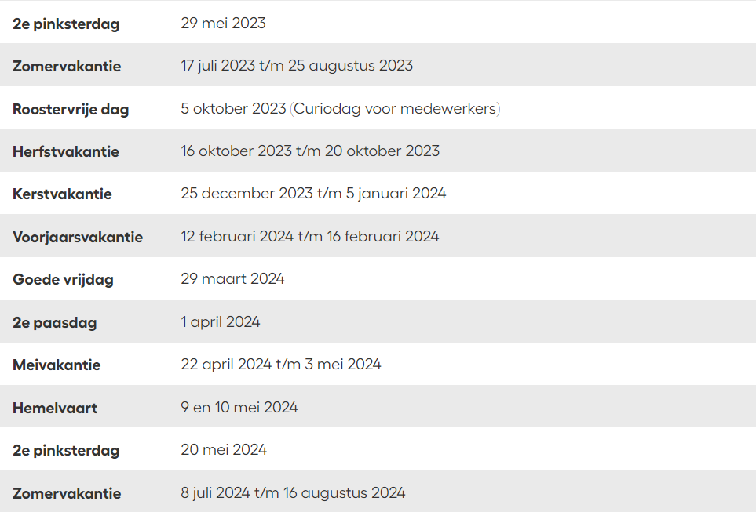

Praktijkondersteuning
Afkorting (Pro)
Deze les richt zich vooral op de manier waarop je projecten moet aanpakken en opzetten, inclusief het opstellen van een stappenplan.
Wat wil jij later worden? Die vraag staat bij Curio Knipplein 11 centraal. Het begint met enthousiasme. Jij kan later namelijk doen wat je wilt. Bouw een website voor dat hippe Italiaanse restaurant of help advocaten in de rechtszaal. Of monteer straks de afleveringen van Holland’s got Talent. Wil jij liever internationaal? Bij ons is alles mogelijk.
Onze school helpt je met jouw toekomst. Niet alleen met leuke opleidingen waar je super veel leert. We nodigen ook vaak mensen uit het bedrijfsleven uit. Zij vertellen alles over hun beroep. Stel jouw vragen aan advocaten en marketingmanagers uit het werkveld. Zo leer jij alles over je toekomstige vak. Kom je eens langs?
Afkorting (Pro)
Deze les richt zich vooral op de manier waarop je projecten moet aanpakken en opzetten, inclusief het opstellen van een stappenplan.
Afkorting (Web)
Bij deze lessen ga je aan de slag met het bouwen van websites en krijg je ook inzicht in wat zich daarachter bevindt.
Afkorting (Native)
Bij dit vak ga je aan de slag met programmeertalen zoals Python of C#, en aan het begin ook met de microbit.
Afkorting (Pra)
Bij Praktijkwerk ga je aan de slag met projecten die vaak in groepsverband worden uitgevoerd, en deze projecten kunnen allerlei opdrachten omvatten, zoals het ontwikkelen van web- en app-applicaties.
Afkorting (Por)
Bij het Portfolio-gesprek zit je samen met je mentor om te bespreken hoe het met jou en je voortgang gaat. Tijdens deze gesprekken kun je altijd zaken bespreken die moeilijk voor je zijn, en ze zullen hun best doen om je daarbij te ondersteunen.
Afkorting (Algo)
Dit vak begint pas in het tweede blok, namelijk Blok B. Tijdens deze lessen leer je bijvoorbeeld over For-loops, hun verschillende soorten en wanneer je ze het beste kunt toepassen. Daarnaast behandelen we onderwerpen zoals arrays, swaps, while-loops, enzovoort.
Hier heb je een voorbeeld rooster van hoe het er uit kan zien dit rooster kan je altijd open via je studentenportaal.

Hier onder zien je een overzicht van alle blokken zodat je weet wat je ongeveer te wachten mocht je deze opleiding kiezen.

Naast het basis- en profieldeel van je opleiding volg je ook keuzedelen. Dit is een verplicht onderdeel van elke opleiding. Het kunnen keuzedelen zijn waarmee je je verder kunt specialiseren in je beroep of keuzedelen die je voorbereiden op een volgende opleiding. Je kunt soms ook keuzedelen kiezen die aansluiten bij jouw vakspecialisme, interesses, hobby’s en toekomstdromen.
Voor informatie over de inzet van keuzedelen kun je straks terecht bij je studieloopbaanbegeleider. Per opleidingsniveau is de omvang van de keuzedeelverplichting voor de student door de minister vastgelegd. Je volgt verplicht 1 tot 4 keuzedelen per opleiding, afhankelijk van het niveau en de duur van je opleiding. De omvang van jouw keuzedeelverplichting verandert niet, ongeacht hoe lang je over de opleiding doet.
- Digitale vaardigheden voor gevorderden
- Inleiding GEO-ICT
- Grafisch ontwerp voor webdevelopment
- Verdieping software
- Geo-ICT
- Mobile application development
- Frontend development
Op deze opleiding is het mogelijk om je opleiding binnen 3 jaar af te ronden, in plaats van de standaard 4 jaar. Als je al wat kennis hebt over onderwerpen die terugkomen in de opleiding, kun je na een halfjaar kiezen om het versneltraject te volgen.
Met een versnellingstraject kun je de opleiding in 3 jaar in plaats van 4 jaar voltooien, gebaseerd op prestaties tijdens praktijkopdrachten en toetsmomenten. De beslissing wordt genomen door leraren en jouzelf in februari van je eerste jaar. Bij deze optie krijg je 1 extra vak en meer wekelijkse uren. Plus krijg je meer verdieping in zo wat elk vak, dit doen de leraren om je een nog betere developer voor wanneer je afstudeerdt op de opleiding.
- Je hebt een vmbo-diploma kaderberoepsgerichte, gemengde of theoretische leerweg (voorheen lbo, vbo of mavo diploma), of
- Je hebt een diploma basisberoepsopleiding (mbo niveau 2) in eenzelfde beroep- of beroepencategorie, of
- Je hebt een bewijs dat je de eerste 3 leerjaren van de havo of het vwo goed hebt doorlopen.
Hieronder vind je een overzicht van het vakantierooster in schooljaar 2023-2024 voor leerlingen vmbo en studenten mbo Curio.
Jonne van Diesen
Kitty Martens
Mark Ridders
Joost Ambagts
Kasar Mustafa
Wiro Verdiesen
Gizem Keskin-Bozkir
Bart Roos
In eerste instantie vond ik het lastig om te bedenken wat ik wilde gaan doen, maar ik wist dat ik plezier had in het werken met computers. Dit leidde uiteindelijk tot mijn keuze voor deze opleiding.
In het begin vond ik het behoorlijk uitdagend en twijfelde ik of ik het wel aankon. Maar na verloop van tijd begon ik het steeds beter te begrijpen en merkte ik dat ik mezelf steeds meer kon verbeteren, wat een goed gevoel gaf.
Deze opleiding is zeker veeleisend, maar als je de juiste motivatie hebt, kom je er zeker weten. Ik vind het persoonlijk een zeer boeiende opleiding en zou het zeker aanraden aan anderen.
Maar ik vind een zeer leuke opleiding en vind het zeker aan te raden .
In het begin was het vrij stil, maar na verloop van tijd werd de sfeer aanzienlijk gezelliger, wat het soms wat lastiger maakt om je te concentreren. Persoonlijk vind ik dat niet altijd erg, maar tot op zekere hoogte. Over het algemeen ben ik echter wel tevreden met de sfeer.
Wil je nog eens een kijkje nemen in ons gebouw? Maak dan een digitale tour. Druk op de pijltjes en loop door de school. Je ziet onze lokalen, de praktijkruimtes en de aula. Of klik op de drie streepjes linksboven om meteen naar een bepaald deel van het gebouw te gaan. Zie jij jezelf hier de komende jaren al rondlopen?